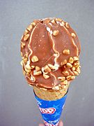
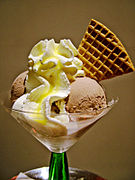
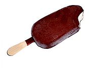
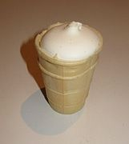

Ice cream
Ice cream (also called ice) is a frozen dessert made mainly from
milk, cream, butter, sugar with added flavouring and fragrance,
various fruits and berries are also added.
Ice cream can also be made with fruit (based on the juice and pulp of fruits and berries).
Such ice cream is called sorbet.
Nutritional value
Ice cream as a dairy product has more than 100 nutrients. It contains proteins, fats,
carbohydrates,
and a set of vitamins (A, B1, B2, B12, C, D, E, P). The amount of vitamin C increases with the
addition
of fruit filling. Ice cream ingredients contribute to the production of serotonin in the body.
Dairy ice cream
contains a lot of tryptophan, a natural calming agent. Ice cream has a high nutritional value,
which is why
it is recommended for patients after abdominal surgery, peptic ulcer disease (especially if
there is bleeding),
anaemia, and tuberculosis. However, it should not be consumed excessively in case of
atherosclerosis, obesity,
hypertension, and gastritis.
Ice cream is one of the safest foods. Its ingredients are subject to disinfection (which means
that all harmful
microorganisms are killed). In addition, the mixture is then chilled, which inhibits the
development of microorganisms,
including harmful ones. But, like all dairy products, ice cream spoils quickly when it is warm.
Translated with www.DeepL.com/Translator (free version)
History
Several nations can compete for the right to be called the parents of ice cream. First and
foremost,
the Chinese - they were the first to make sweet ice, the recipe for which was kept a strict
secret.
The Chinese believed that the crafts of silk and ice cream production would bring them world
fame.
With silk, they succeeded. But they were wrong about ice cream. The Arabs, Indians, and Iranians
adopted
this remedy from the Chinese.
In the fourth century BC. Alexander the Great, who could not stand the heat, used to drink fruit
juices with
snow delivered by slaves from the mountain peaks.
The Roman Emperor Nero (1st century AD) was also fond of ice cream.
In Russia, where no one knew anything about Chinese ice cream either, a method of preparing a
cold dessert
became widespread: frozen milk was finely chopped and mixed with fresh berries. A little later,
they started
freezing cottage cheese and cream and adding dried raisins or apricots.
In the 13th century, the Italian traveller Marco Polo brought to Europe several ways to prepare
this previously
unknown dish. In the summer of 1660, Italian Francesco Procopio opened an ice cream shop in
Paris and became
the first European ice cream maker. Soon, ice cream conquered the world.
In 1750, France began producing this dish, which quickly became a year-round favourite.
In the United States, the first mention of public ice cream sales dates back to May 1777. Its
production grew
rapidly at the end of the 19th century, when advanced refrigeration machines were introduced.
In short, ice cream is an international product. The Slavs introduced various fillers to the way
the dish was prepared,
Western Europe invented many industrial methods of its production, and the Americans came up
with the idea of making
waffle cups and ice cream (ice cream on a stick, glazed with chocolate).
In 1851, dairy farmer Jacob Fussell established the world's first industrial ice cream
production in Baltimore.
Types of ice cream or dissertations based on it
- Plombir
- Eskimo
- Creme brulee
- Afogato
- Semifreddo
- Sorbet
- Kercheh
Gallery
   